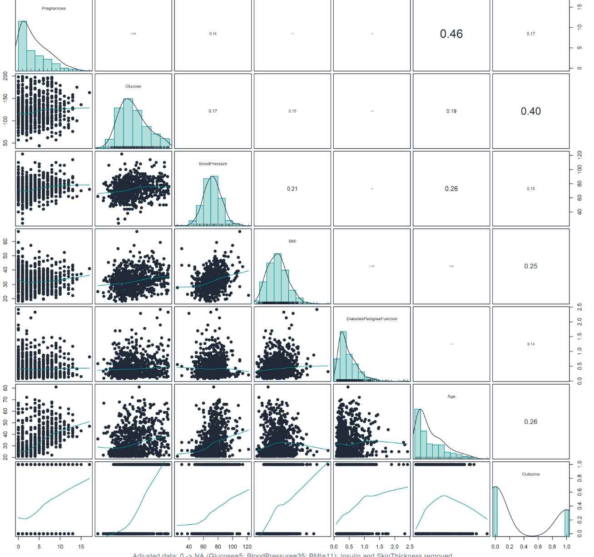
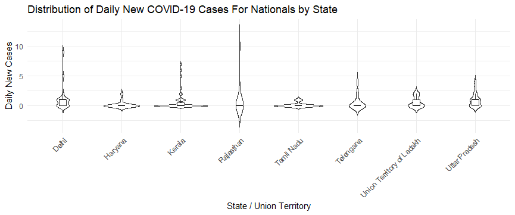
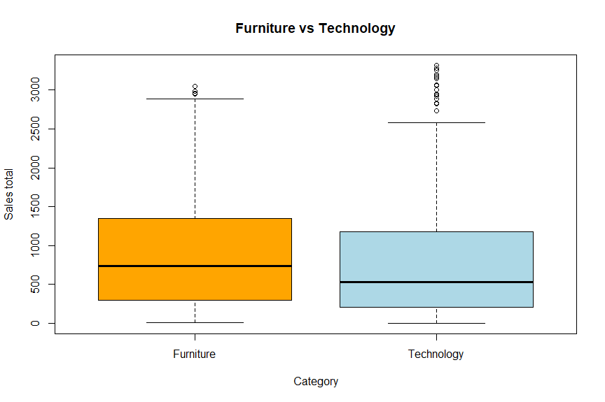
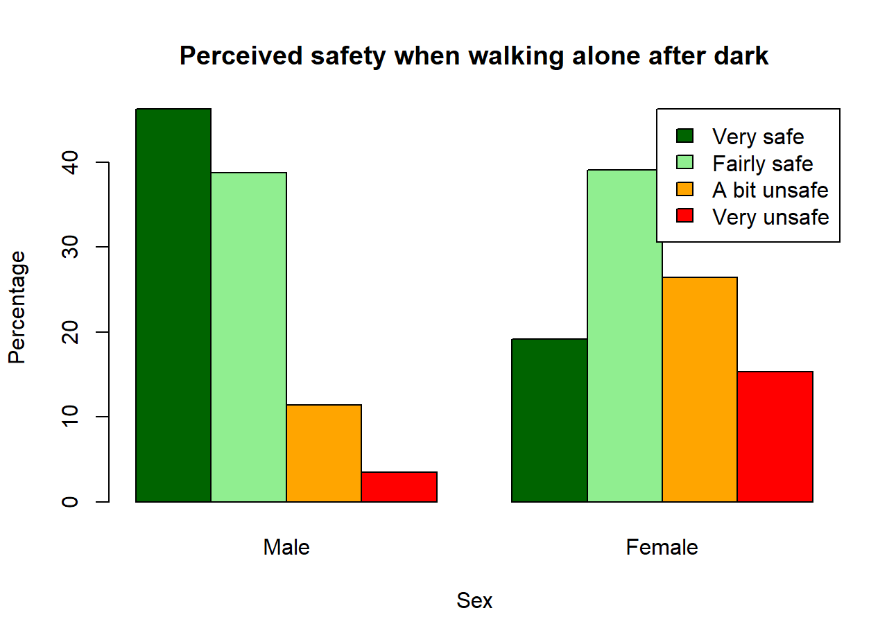
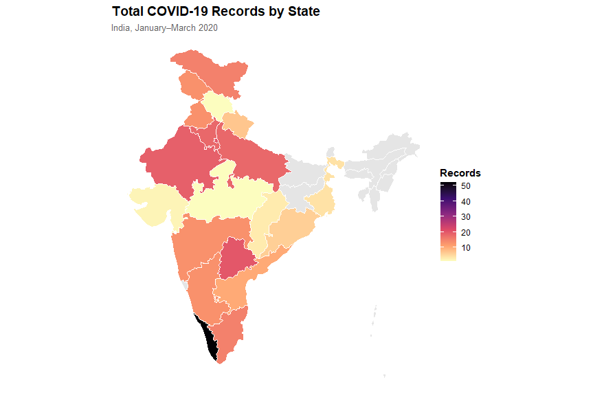
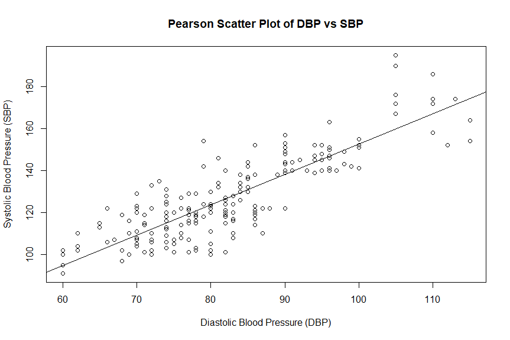

This page documents the coursework, seminar work and final analysis completed across Module 3: Numerical Analysis.

Final Statistical Analysis Submission
This final assessment uses a diabetes dataset to investigate factors associated with diabetes outcomes. The revised R analysis includes data preparation, exploratory visualisation, association tests, logistic regression, a decision tree and ten-fold cross-validation. The accompanying presentation will be linked here when it is uploaded.

Foundations in R and Data Exploration
Units 1–4 established my R workflow through data import, descriptive summaries and visualisation. I worked with survey and Indian COVID-19 data, created histograms, density, box and violin plots, recoded case categories, and explored probability through the birthday problem.

Seminar Work, Visualisation and Tests
Seminar submissions in Units 6 and 7, followed by Unit 8 activities, developed practical analytical skills. I used density, box, strip and jitter plots and applied ANOVA, Tukey, t-test, Wilcoxon and variance checks to investigate differences between groups.

Crime Survey Analysis
Unit 9 used Crime Survey for England and Wales data to explore perceived safety across groups. I created comparative charts, worked with contingency tables and proportions, and applied chi-square testing to investigate associations.

COVID-19 Case Analysis
A second Unit 9 investigation returned to Indian COVID-19 records. I grouped cases by state and severity, compared recovery patterns, and joined the data to a state boundary file to map the distribution of records.

Correlation and Regression
Units 10 and 11 progressed to normality checks, Pearson and Spearman correlation, linear regression, confidence intervals, residual diagnostics and model interpretation using health and COVID-19 data.
Seminars, Discussions and Practice
The course repository also holds seminar submissions and discussion work completed throughout the module. Its browser-based study tool generates randomised practice questions covering descriptive statistics, probability, hypothesis testing, confidence intervals, matrices and boxplots.